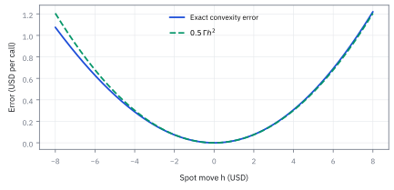

13.1 The Replicating Portfolio and the Black–Scholes Partial Differential Equation (PDE)
สร้างสิทธิ์ซื้อหุ้นด้วยหุ้นและบัญชีเงินสด
ขาย short สัญญา European call 100 สัญญา (10,000 หุ้น) บนหุ้นราคา \$100 strike \$105 อายุ 0.25 ปี ดอกเบี้ย 4% ต่อปี ความผันผวน 20% ต้องถือหุ้นกี่หุ้นและกู้เงินเท่าไรเพื่อทำซ้ำภาระนี้โดยไม่เสี่ยงทิศทางหุ้น?
เฉลย: ซื้อหุ้น 3,677 หุ้น (Delta 0.3677) และกู้เงินสด \$343,810 พอร์ตนี้มีมูลค่า \$23,909 (ราคา call \$2.39 ต่อหุ้น) เลียนแบบ call ได้เป๊ะทุกเสี้ยววินาทีจนความเสี่ยงสุ่มหายหมด และนำไปสู่ Black–Scholes PDE
ศัพท์ชุดแรก: สัญญาและกลไกที่ใช้ตั้งราคา
- European call
-
คืออะไร: สิทธิ์ที่ให้ผู้ถือ *ซื้อ* หุ้นที่ราคาตกลงไว้ ในวันหมดอายุเท่านั้น ไม่ใช่ก่อนหน้านั้น
ใช้ทำอะไร: เป็นสัญญาตัวอย่างที่เราจะสร้างราคาให้มันตลอดทั้งหัวข้อ
ทำไมต้องมี: เพราะเป็นสัญญาที่ง่ายที่สุดที่ยังมีความไม่แน่นอนจริง จึงเหมาะใช้เรียนกลไกก่อนไปตัวยาก
- underlying
-
คืออะไร: สินทรัพย์ที่สัญญาอ้างอิงถึง ในที่นี้คือหุ้น
ใช้ทำอะไร: เป็นตัวที่เราจะซื้อขายจริงเพื่อสร้างพอร์ตเลียนแบบ
ทำไมต้องมี: เพราะราคาของสิทธิ์ขึ้นกับมันทั้งหมด ถ้าไม่มีตัวนี้ซื้อขายได้ ทั้งหัวข้อนี้ใช้ไม่ได้เลย
- strike
-
คืออะไร: ราคาที่เขียนไว้ในสัญญาว่าจะซื้อได้เท่าไร มักเขียนแทนด้วย $K$
ใช้ทำอะไร: ใช้ตัดสินตอนหมดอายุว่าสิทธิ์มีค่าหรือไม่มีค่า
ทำไมต้องมี: เพราะมันเป็นเส้นแบ่งเดียวที่ทำให้ payoff หักมุม และความหักมุมนั้นคือที่มาของทุกอย่าง
- payoff
-
คืออะไร: เงินที่ผู้ถือได้รับ ณ วันหมดอายุ ซึ่งขึ้นกับราคาหุ้นวันนั้นอย่างเดียว
ใช้ทำอะไร: เป็นเป้าหมายที่พอร์ตเลียนแบบต้องทำให้ได้เท่ากันทุกกรณี
ทำไมต้องมี: เพราะราคาที่ยุติธรรมคือต้นทุนของการสร้าง payoff นั้นขึ้นมา ไม่ใช่การเดาว่าหุ้นจะขึ้นหรือลง
- premium
-
คืออะไร: เงินที่ผู้ซื้อจ่ายวันนี้เพื่อได้สิทธิ์นั้นมา
ใช้ทำอะไร: เป็นตัวเลขที่เรากำลังหา และเป็นตัวเลขที่ตลาดเสนอกันจริง
ทำไมต้องมี: เพราะถ้าเราคำนวณได้ต่างจากตลาดมาก แปลว่าฝ่ายใดฝ่ายหนึ่งกำลังผิด และนั่นคือโอกาส
- replicating portfolio
-
คืออะไร: พอร์ตที่ประกอบด้วยหุ้นกับเงินสด ซึ่งให้มูลค่าเท่ากับ option ในทุกสถานการณ์
ใช้ทำอะไร: ใช้แทนที่คำถาม 'สิทธิ์นี้ควรราคาเท่าไร' ด้วยคำถาม 'สร้างมันขึ้นมาต้องใช้เงินเท่าไร'
ทำไมต้องมี: เพราะคำถามที่สองตอบได้ด้วยราคาที่มองเห็นในตลาด ส่วนคำถามแรกต้องเดาอนาคต
- dynamic replication
-
คืออะไร: การปรับจำนวนหุ้นในพอร์ตเลียนแบบไปเรื่อย ๆ ตามราคาและเวลาที่เปลี่ยน
ใช้ทำอะไร: ใช้รักษาให้พอร์ตเหมือน option ต่อไปได้ ไม่ใช่แค่เหมือนตอนตั้งต้น
ทำไมต้องมี: เพราะความไวของ option ต่อราคาหุ้นเปลี่ยนตลอดเวลา ตั้งครั้งเดียวแล้วปล่อยจะหลุดทันที
- self-financing
-
คืออะไร: กติกาที่ห้ามเติมเงินเข้าหรือถอนเงินออกจากพอร์ตหลังตั้งเสร็จ ซื้อหุ้นเพิ่มต้องใช้เงินสดในพอร์ตเอง
ใช้ทำอะไร: ใช้เป็นเงื่อนไขบังคับตอนเขียนสมการการเปลี่ยนแปลงมูลค่าพอร์ต
ทำไมต้องมี: เพราะถ้าเติมเงินได้ตามใจ พอร์ตอะไรก็เลียนแบบอะไรก็ได้ ข้อสรุปทั้งหมดจะไร้ความหมาย
- arbitrage
-
คืออะไร: รายการที่เริ่มโดยไม่ต้องใช้เงินสุทธิ ไม่มีทางขาดทุน และมีโอกาสได้กำไร
ใช้ทำอะไร: ใช้เป็นเครื่องมือพิสูจน์ ว่าถ้าราคาไม่เป็นไปตามที่เราคำนวณจะเกิดอะไรขึ้น
ทำไมต้องมี: เพราะถ้ามีของแบบนี้จริง ตลาดจะแห่กันทำจนมันหายไป ราคาจึงต้องปรับมาที่ค่าที่เราคำนวณได้
- law of one price
-
คืออะไร: กฎที่ว่าของสองอย่างที่ให้เงินเหมือนกันทุกสถานการณ์ ต้องมีราคาเท่ากันวันนี้
ใช้ทำอะไร: ใช้ผูกราคา option เข้ากับต้นทุนของพอร์ตเลียนแบบ
ทำไมต้องมี: เพราะนี่คือสะพานเส้นเดียวที่เปลี่ยนงานเดาราคาให้กลายเป็นงานคำนวณ
สัญลักษณ์ที่ใช้ในหัวข้อนี้
| สัญลักษณ์ | ความหมาย | หน่วย |
|---|---|---|
| $S_t$ | ราคาหุ้น ณ เวลา $t$ ตัวเดียวที่ขยับเองแบบสุ่มในหัวข้อนี้ | USD |
| $K$ | ราคาที่เขียนไว้ในสัญญาว่าจะซื้อได้ ตายตัวตั้งแต่วันเซ็น | USD |
| $t$ | เวลาปัจจุบัน นับเป็นปีจากวันนี้ | ปี |
| $T$ | วันหมดอายุของสัญญา เป็นจุดตายตัวบนแกนเวลา | ปี |
| $\tau=T-t$ | เวลาที่เหลือก่อนหมดอายุ ค่านี้ลดลงทุกวันแม้ไม่มีอะไรเกิดขึ้น | ปี |
| $C(S,t)$ | ราคา call ซึ่งขึ้นกับทั้งราคาหุ้นและเวลา คือสิ่งที่หัวข้อนี้กำลังหา | USD |
| $C_t$ | ราคาเปลี่ยนเร็วแค่ไหนเมื่อเวลาผ่านไป โดยราคาหุ้นอยู่นิ่ง | USD ต่อปี |
| $C_S$ | ราคาเปลี่ยนเท่าไรเมื่อหุ้นขยับหนึ่งหน่วย คือความชัน | ไม่มีหน่วย |
| $C_{S S}$ | ความชันนั้นเปลี่ยนเร็วแค่ไหน คือความโค้ง และเป็นพจน์ที่ Itô ทิ้งไว้ | USD⁻¹ |
| $\Delta$ | จำนวนหุ้นต่อ call หนึ่งใบ ที่ทำให้แรงสุ่มสองขาหักล้างกันพอดี | หุ้นต่อ call |
| $\Gamma$ | ความโค้งของราคา call ซึ่งเป็นตัวบอกว่าจำนวนหุ้นข้างบนเพี้ยนเร็วแค่ไหน | USD⁻¹ |
| $B$ | เงินสดในบัญชี ซึ่งโตตามอัตราดอกเบี้ยเมื่อเป็นบวก และเสียดอกเบี้ยเมื่อติดลบ | USD |
| $V$ | มูลค่ารวมของพอร์ตทำซ้ำ คือหุ้นบวกเงินสด | USD |
| $\mu$ | อัตราที่หุ้นคาดว่าจะโต ซึ่งจะหายไปจากคำตอบสุดท้ายในขั้นที่ 6 | ปี⁻¹ |
| $r$ | อัตราดอกเบี้ยที่ได้โดยไม่ต้องเสี่ยง ใช้เป็นราคาของเวลา | ปี⁻¹ |
| $\sigma$ | ขนาดความผันผวนของหุ้นต่อรากของเวลา เป็นตัวเดียวที่มองไม่เห็นตรง ๆ ในตลาด | ปี⁻¹ᐟ² |
| $W_t$ | แหล่งความสุ่มเดียวของทั้งหัวข้อ สะสมความบังเอิญจากวันแรกถึงเวลา $t$ | ปี¹ᐟ² |
| $dt$ | ช่วงเวลาสั้นมากหนึ่งช่วง สั้นจนพจน์ที่มี $dt$ ยกกำลังสองทิ้งได้ | ปี |
| $dW_t$ | ความบังเอิญที่เกิดขึ้นภายในช่วงนั้นช่วงเดียว ขนาดโตตามรากของ $dt$ | ปี¹ᐟ² |
| $(x)^+=\max(x,0)$ | ตัดค่าติดลบทิ้งให้เหลือศูนย์ ใช้เขียนว่าสิทธิ์ที่ไม่คุ้มใช้ก็แค่ไม่ใช้ | ตาม $x$ |
| $N$ | จำนวนสัญญาที่ถือ เป็นบวกเมื่อซื้อ เป็นลบเมื่อขาย | สัญญา |
| $m$ | จำนวนหุ้นต่อหนึ่งสัญญา ในตลาดสหรัฐฯ มักเท่ากับ 100 | หุ้นต่อสัญญา |
สัญญาที่กำลังทำซ้ำ
ในหัวข้อนี้ $C(S,t)$ คือราคาต่อหนึ่ง European call ก่อนหมดอายุ ผู้ซื้อมีสิทธิ์ซื้อหุ้นตาม strike และ expiry ที่เขียนเป็น $K,T$ ตามลำดับ ส่วนผู้ขายรับภาระด้านตรงข้าม
วันหมดอายุ ผู้ซื้อรับ $\max(S_T-K,0)$: ถ้าหุ้นต่ำกว่า strike ก็ปล่อยสิทธิ์หมดค่า ถ้าหุ้นสูงกว่าก็รับส่วนต่าง พอร์ตหุ้นกับเงินสดด้านล่างต้องสร้างเงินรับแบบเดียวกันทุกปลายทาง
Worked Example — โจทย์และสิ่งที่ให้มา
โจทย์ให้อะไรมาบ้าง: ใช้ European call ไม่มีเงินปันผลบนหุ้นสหรัฐฯ โดย spot เท่ากับ \$100, strike เท่ากับ \$105, เวลาคงเหลือ 0.25 ปี, อัตราดอกเบี้ย 4% ต่อปีแบบต่อเนื่อง และ volatility 20% ต่อรากปี ตลาดในแบบจำลองซื้อขายต่อเนื่อง ขายชอร์ตได้ ไม่มี bid–ask ไม่มีค่าธรรมเนียม กู้และฝากที่อัตราเดียวกัน และเส้นทางราคาเป็น diffusion ต่อเนื่อง
ข้อสรุปต่อไปจึงเป็น no-arbitrage ภายในสมมติฐาน ไม่ใช่คำกล่าวว่าหุ้นจริงไม่มี gap หรือ hedge ได้ทุกเสี้ยววินาที บน desk ให้ประกาศ clock, dividend, funding curve และ contract multiplier ก่อนนำตัวเลขไปคูณ
ที่มาที่ไป: บทความปี 1973 ที่เปลี่ยนตลาดทั้งตลาด
ก่อนปี 1973 การตั้งราคา option เป็นเรื่องของการต่อรองและประสบการณ์ ไม่มีสูตรกลางที่ทุกคนยอมรับ และคนพยายามตั้งราคาด้วยการเดาว่าหุ้นจะขึ้นหรือลง ซึ่งไม่มีทางตกลงกันได้
รากฐานเริ่มจาก Louis Bachelier (1900) ที่ใช้ Brownian motion ตั้งราคาบนกระดานปารีสก่อน Einstein ถึง 5 ปี ต่อมา Paul Samuelson (1965) เสนอ Geometric Brownian Motion เพื่อกันราคาหุ้นติดลบ และ Edward O. Thorp ใช้สูตรลักษณะนี้เทรดจริงในกองทุนตั้งแต่ปลายทศวรรษ 1960
จนกระทั่ง Fischer Black กับ Myron Scholes ตีพิมพ์บทความในปี 1973 พร้อมกับ Robert Merton ในปีเดียวกัน ที่พิสูจน์ว่าคำถามนี้ตอบได้ด้วย no-arbitrage โดยไม่ต้องเดาทิศทางเลย
กุญแจคือข้อสังเกตว่าราคา option กับราคาหุ้นถูกขับด้วยความสุ่มก้อนเดียวกัน จึงสร้างพอร์ตที่กำจัดความสุ่มออกได้หมด และของที่ไม่มีความสุ่มต้องโตเท่าอัตราดอกเบี้ยเท่านั้น Scholes และ Merton ได้รางวัลโนเบลในปี 1997 ส่วน Black เสียชีวิตไปก่อนในปี 1995
ขั้นที่ 1 — ลองด้วยมือ: หุ้นสองทาง กับ call หนึ่งใบ
ก่อนสมการต่อเนื่อง ลองโลกที่หุ้นพรุ่งนี้มีได้แค่สองราคา (แบบเดียวกับหัวข้อ 9.1) แล้วหาว่าต้องถือหุ้นกี่หุ้นกับเงินสดเท่าไร พอร์ตจึงจ่ายเท่ากับ call ทั้งสองทาง
ถือหุ้น 0.25 หุ้น แล้วกู้ 22.5 (B ติดลบคือกู้) ถ้าหุ้นขึ้น 110 พอร์ตมีค่า 27.5 − 22.5 = 5 ถ้าลง 90 มีค่า 22.5 − 22.5 = 0 ตรงกับ call ทั้งสองทาง law of one price จึงบังคับให้ call ราคา 2.5
สังเกตสิ่งที่ *ไม่ได้ใช้*: โอกาสที่หุ้นจะขึ้น ไม่ว่าจะ 90% หรือ 10% คำตอบก็ 2.5 เท่าเดิม นี่คือเวอร์ชันสองทางของผลที่ขั้นที่ 7 จะได้ในโลกต่อเนื่อง คืออัตราโตคาดหวังของหุ้นหายไปจากราคา
$\Delta=5/20$ คือ “call เปลี่ยนเท่าไรต่อหุ้นเปลี่ยนหนึ่งหน่วย” ซึ่งในโลกต่อเนื่องกลายเป็นความชัน $C_S$ ของขั้นที่ 5 ส่วนเงินกู้ 22.5 คือบัญชี $B$ ที่ติดลบในขั้นที่ 10
ขั้นที่ 2 — ของที่ให้มา: หุ้นมีแหล่งสุ่มแหล่งเดียว
บรรทัดนี้เป็น ของที่ให้มา จากหัวข้อ 11.1 ไม่ได้สร้างใหม่ที่นี่ สิ่งที่ต้องสังเกตมีข้อเดียว คือมี $dW$ อยู่ก้อนเดียวในสมการ กลเม็ดทั้งหมดของสูตรที่หัวข้อ 13.2 จะเรียกว่า Black–Scholes อยู่ตรงนี้ ถ้าราคา option กับราคาหุ้นถูกขับด้วยแรงสุ่มก้อนเดียวกัน ก็ใช้ตัวหนึ่งหักล้างอีกตัวจนไม่เหลือความสุ่มได้
การเปลี่ยนหุ้นมี drift ขนาด mu S ต่อปีและ diffusion ขนาด sigma S ต่อรากปี แบบจำลองนี้มี Brownian motion ตัวเดียวจึงมีความหวังว่าจะตัดความสุ่มด้วยหุ้นตัวเดียว
ศัพท์ชุดที่สอง: เครื่องมือคณิตศาสตร์ที่ใช้ในการพิสูจน์
- Brownian motion
-
คืออะไร: แรงสุ่มต่อเนื่องที่ขนาดการขยับในช่วงสั้นโตตามรากของเวลา
ใช้ทำอะไร: ใช้เป็นตัวแทนความไม่แน่นอนของราคาหุ้นในแบบจำลอง
ทำไมต้องมี: เพราะมันเป็นแรงสุ่มที่ง่ายที่สุดที่เส้นทางยังต่อเนื่อง จึงคำนวณต่อได้
- diffusion
-
คืออะไร: แบบจำลองที่ให้ตัวแปรเดินต่อเนื่องด้วยส่วนที่คาดเดาได้บวกแรงสุ่มข้างต้น
ใช้ทำอะไร: ใช้เขียนว่าราคาหุ้นขยับอย่างไรในช่วงเวลาสั้นมาก
ทำไมต้องมี: เพราะมันแยกสิ่งที่รู้ออกจากสิ่งที่ไม่รู้ได้ชัด ทำให้จัดการทีละส่วนได้
- Itô's lemma
-
คืออะไร: กฎลูกโซ่ฉบับที่ใช้ได้กับตัวแปรที่มีแรงสุ่ม ซึ่งมีพจน์เพิ่มที่กฎลูกโซ่ปกติไม่มี
ใช้ทำอะไร: ใช้แปลงจาก 'หุ้นขยับอย่างไร' ไปเป็น 'ราคา option ขยับอย่างไร'
ทำไมต้องมี: เพราะราคา option เป็นค่าที่ขึ้นกับราคาหุ้น และกฎลูกโซ่ปกติให้คำตอบผิดเมื่อ input มีแรงสุ่ม
- quadratic variation
-
คืออะไร: ผลรวมของการขยับยกกำลังสอง ซึ่งไม่หายไปแม้ซอยเวลาให้ถี่ขึ้นเรื่อย ๆ
ใช้ทำอะไร: ใช้เป็นเหตุผลว่าทำไม Itô's lemma ถึงมีพจน์เพิ่มขึ้นมา
ทำไมต้องมี: เพราะนี่คือความต่างเชิงลึกระหว่างเส้นทางสุ่มกับเส้นเรียบ และเป็นที่มาของ gamma ทั้งหมด
- delta
-
คืออะไร: ความชันของราคา option เทียบกับราคาหุ้น บอกว่าหุ้นขึ้นหนึ่งดอลลาร์แล้ว option ขึ้นเท่าไร
ใช้ทำอะไร: ใช้กำหนดจำนวนหุ้นที่ต้องถือในพอร์ตเลียนแบบ
ทำไมต้องมี: เพราะเป็นตัวเลขที่ทำให้แรงสุ่มของสองฝั่งหักล้างกันพอดี ซึ่งเป็นหัวใจของการพิสูจน์
- gamma
-
คืออะไร: อัตราที่ delta เองเปลี่ยนไปเมื่อราคาหุ้นขยับ
ใช้ทำอะไร: ใช้บอกว่าต้องปรับ hedge บ่อยแค่ไหน และ hedge เชิงเส้นเหลือความเสี่ยงไว้เท่าไร
ทำไมต้องมี: เพราะ delta ไม่คงที่ การ hedge ครั้งเดียวจึงไม่พอ และค่านี้วัดว่าไม่พอแค่ไหน
- partial differential equation (PDE)
-
คืออะไร: สมการที่ผูกความไวของราคา option ต่อเวลา ต่อราคา และต่อความโค้ง ไว้ด้วยกัน
ใช้ทำอะไร: เป็นผลลัพธ์หลักของหัวข้อนี้ และเป็นสมการที่ราคา option ทุกตัวต้องเชื่อฟัง
ทำไมต้องมี: เพราะมันเปลี่ยนปัญหาตั้งราคาให้กลายเป็นปัญหาที่มีวิธีแก้เป็นมาตรฐานอยู่แล้ว
- terminal condition
-
คืออะไร: ข้อกำหนดว่า ณ วันหมดอายุ ราคาต้องเท่ากับ payoff พอดี
ใช้ทำอะไร: ใช้ปิดโจทย์ให้สมการมีคำตอบเดียว
ทำไมต้องมี: เพราะสมการอย่างเดียวมีคำตอบได้เป็นอนันต์ ต้องมีจุดยึดอย่างน้อยหนึ่งแห่ง
- boundary condition
-
คืออะไร: ข้อกำหนดว่าราคาเป็นอย่างไรเมื่อหุ้นเข้าใกล้ศูนย์ หรือสูงมากจนแทบแน่ว่าจะได้ใช้สิทธิ์
ใช้ทำอะไร: ใช้ปิดโจทย์ที่ขอบทั้งสองด้าน ควบคู่กับข้อกำหนดวันหมดอายุ
ทำไมต้องมี: เพราะโดเมนของราคาหุ้นไม่มีที่สิ้นสุด ต้องบอกว่าที่ปลายทั้งสองข้างเกิดอะไรขึ้น
- drift
-
คืออะไร: อัตราการเคลื่อนที่เฉลี่ยของราคาหุ้นในแบบจำลอง
ใช้ทำอะไร: อยู่ในสมการของหุ้นตั้งแต่ต้น แต่จะหายไปตอนจบ
ทำไมต้องมี: เพราะการที่มันหายไปคือผลลัพธ์ที่น่าตกใจที่สุดของหัวข้อ ราคา option ไม่ขึ้นกับว่าเราคิดว่าหุ้นจะขึ้นหรือลง
- volatility
-
คืออะไร: ขนาดของแรงสุ่มต่อรากของเวลา วัดว่าราคาเหวี่ยงแรงแค่ไหน
ใช้ทำอะไร: เป็นตัวแปรเดียวในสมการที่มองไม่เห็นตรง ๆ และต้องประมาณเอา
ทำไมต้องมี: เพราะมันไม่หายไปเหมือน drift ทั้งราคาและความเสี่ยงจึงขึ้นกับมันทั้งหมด
- risk-neutral
-
คืออะไร: กติกาถ่วงน้ำหนักเส้นทางแบบหนึ่งที่ใช้ตั้งราคา ไม่ใช่ความเชื่อว่าคนไม่กลัวความเสี่ยง
ใช้ทำอะไร: ใช้เขียนราคาเป็นค่าเฉลี่ยของ payoff ที่คิดลดแล้ว
ทำไมต้องมี: เพราะชื่อมันชวนเข้าใจผิดที่สุดในวิชานี้ มันเป็นเครื่องมือคำนวณ ไม่ใช่คำบรรยายโลกจริง
- bid และ ask
-
คืออะไร: ราคาที่เราขายได้ กับราคาที่เราซื้อได้ ซึ่งไม่เท่ากันเสมอ
ใช้ทำอะไร: ใช้ประเมินว่าการปรับ hedge บ่อย ๆ มีต้นทุนจริงเท่าไร
ทำไมต้องมี: เพราะการพิสูจน์ทั้งหมดสมมติว่าซื้อขายฟรี ซึ่งไม่จริง และส่วนต่างนี้คือค่าใช้จ่ายที่ถูกซ่อนไว้
- complete market
-
คืออะไร: สภาพที่ความเสี่ยงทุกแหล่งในแบบจำลองสร้างซ้ำได้ด้วยสินทรัพย์ที่ซื้อขายได้
ใช้ทำอะไร: เป็นเงื่อนไขที่ทำให้การพิสูจน์ในหัวข้อนี้ทำงาน
ทำไมต้องมี: เพราะถ้าตลาดไม่ครบแบบนี้ ราคาจะไม่มีค่าเดียว แต่จะเป็นช่วงแทน
- model risk
-
คืออะไร: ความเสี่ยงที่เกิดจากการที่แบบจำลองไม่ตรงกับโลกจริง
ใช้ทำอะไร: ใช้เตือนว่าข้อสรุปในหัวข้อนี้จริงในแบบจำลอง ไม่ได้จริงในตลาดโดยอัตโนมัติ
ทำไมต้องมี: เพราะโลกจริงมีราคากระโดด มีต้นทุนซื้อขาย และความผันผวนเปลี่ยนตลอด ซึ่งการพิสูจน์นี้สมมติว่าไม่มี
ขั้นที่ 3 — ส่ง dynamics ผ่าน price function
ราคา option เป็นค่าที่ขึ้นกับราคาหุ้นและเวลา จึงต้องส่งความสุ่มของหุ้นผ่านเข้าไป สี่บรรทัดนี้ไม่มีอะไรใหม่ ทุกชิ้นถูกสร้างไว้แล้วในหัวข้อ 12.2 ของสำคัญที่ได้มาคือตัวคูณของ $dW$ ซึ่งจะถูกใช้จับคู่กับพอร์ตในขั้นที่ 5
เรารู้แล้วว่าหุ้นขยับอย่างไร คำถามคือราคา option ซึ่งเป็น function ของหุ้นและเวลา ขยับตามอย่างไร ใช้กฎของหัวข้อ 12.2 โดยเก็บพจน์อันดับสองไว้ ตามเหตุผลที่บทนั้นอธิบายไว้แล้ว
ยกกำลังสองของการขยับก่อน พจน์ที่มีกำลังสองของเวลาและผลคูณเวลากับแรงสุ่มเล็กเกินไปจึงหายไป เหลือเฉพาะกำลังสองของก้อนสุ่ม ซึ่งให้ช่วงเวลากลับมาหนึ่งก้อน
แทนลงไปแล้วจัดกลุ่ม รวมพจน์ที่คูณช่วงเวลาไว้ในวงเล็บเดียว และพจน์ที่คูณแรงสุ่มไว้ท้ายสุด
สองอย่างที่ต้องจำจากบรรทัดสุดท้าย พจน์ครึ่งหนึ่งของ $\sigma^{2}S^{2}C_{S S}$ คือของที่ calculus ปกติไม่มี และตัวคูณของแรงสุ่มคือ $\sigma S$ คูณความชันของราคา option ตัวหลังนี้เองที่ขั้นถัดไปจะเอาไปจับคู่
ทำไมความโค้งกลายเป็นต้นทุนเวลา
call โค้งนูนใน $S$ จึงได้ประโยชน์จากความผันผวนทั้งขึ้นและลง แต่เมื่อพอร์ต delta-neutral ความได้เปรียบจากความโค้งต้องชดเชยด้วย time decay และ funding มิฉะนั้นจะมีรายการไร้ความเสี่ยง สมการ PDE คือบัญชีที่ทำให้สามส่วนนี้พอดีกัน ไม่ใช่เวทมนตร์ที่เสก volatility จากอากาศ
ขั้นที่ 4 — นิยามของพอร์ต self-financing: ห้ามเติมหรือถอนเงินระหว่างทาง
สองก้อนนี้เป็น นิยาม ของกติกาที่เราตั้งขึ้นเอง ไม่ใช่ผลที่พิสูจน์ พอร์ตถือหุ้นจำนวนหนึ่งกับเงินสด และเมื่อปรับจำนวนหุ้น เงินที่ใช้ต้องมาจากบัญชีเงินสดเท่านั้น จึงไม่มีพจน์ $S\,d\Delta$ โผล่มาในสมการ เงื่อนไขข้อนี้สำคัญมาก ถ้าปล่อยให้เติมเงินได้ จะสร้างพอร์ตที่เลียนแบบอะไรก็ได้ และการพิสูจน์ทั้งหมดก็ไม่มีความหมาย
พอร์ตถือ Delta หุ้นและบัญชีเงินสด B การปรับ Delta ไม่สร้างพจน์ S dDelta เพิ่ม เพราะต้นทุนการปรับถูกหักจาก B ตามกติกา self-financing
ขั้นที่ 5 — เลือกจำนวนหุ้นให้แรงสุ่มตรงกัน
เลือกจำนวนหุ้นให้พจน์สุ่มของพอร์ตเท่ากับพจน์สุ่มของ option พอดี บรรทัดชุดนี้แสดงว่า delta ไม่ได้ถูกนิยามขึ้นลอย ๆ มันเป็นคำตอบของสมการบรรทัดเดียว คือสมการที่บังคับให้ความสุ่มสองฝั่งหักกันหมด
ความคิดทั้งหมดอยู่ตรงนี้ ถ้าสร้างพอร์ตที่มีแรงสุ่มเท่ากับของ option พอดี ส่วนต่างของสองสิ่งจะไม่เหลือความสุ่มเลย จึงเขียนสองฝั่งให้เห็นเฉพาะตัวคูณของแรงสุ่ม ฝั่งบนมาจากขั้นที่ 3 ฝั่งล่างมาจากขั้นที่ 4
บังคับให้สองตัวนั้นเท่ากัน ถ้าไม่เท่า ส่วนต่างจะยังสุ่มอยู่ และข้อโต้แย้งเรื่องอัตราดอกเบี้ยในขั้นถัดไปจะใช้ไม่ได้ ตัด $\sigma S$ ออกทั้งสองข้าง ได้จำนวนหุ้นที่ต้องถือ ซึ่งเท่ากับความชันของราคา option พอดี นั่นคือที่มาของคำว่า delta hedge
สองบรรทัดล่างใช้กติกาว่าสองสิ่งที่จ่ายเหมือนกันต้องราคาเท่ากัน แล้วย้ายข้างเพื่อหาว่าต้องมีเงินสดเท่าไร ค่านี้มักติดลบ แปลว่าต้องกู้มาซื้อหุ้น
ขั้นที่ 6 — เทียบ drift ก่อนตัดพจน์ร่วม
ของที่ไม่สุ่มเลยต้องโตเท่าอัตราดอกเบี้ยเป๊ะ ๆ ไม่งั้นจะมีคนทำกำไรฟรีได้ สูตรข้างล่างจบด้วยผลที่แปลกที่สุดในวิชานี้ คือราคา option ไม่ขึ้นกับว่าเราคิดว่าหุ้นจะขึ้นแค่ไหน และเหตุผลอยู่ที่บรรทัดสุดท้ายบรรทัดเดียว
หลังเลือก delta ในขั้นที่ 5 ส่วนต่างของสองฝั่งไม่มีแรงสุ่มเหลือเลย มันจึงเป็นของที่รู้ผลล่วงหน้า และของที่ไม่สุ่มเลยต้องโตเท่าอัตราดอกเบี้ยเป๊ะ ๆ ไม่อย่างนั้นจะมีคนทำกำไรฟรีได้ สอง drift จึงต้องเท่ากัน
เขียนสอง drift ออกมา ฝั่งซ้ายจากขั้นที่ 3 ฝั่งขวาจากขั้นที่ 4 โดยแทนค่าเงินสดที่หาได้ในขั้นที่ 5
บรรทัดที่ห้าคือจังหวะสำคัญที่สุดของทั้งหัวข้อ พจน์ที่มี $\mu$ ปรากฏเหมือนกันทั้งสองฝั่ง จึงตัดกันหมด อัตราการโตจริงของหุ้นหายไปจากสมการ
และมันหายได้เพราะเราเลือก delta เท่ากับความชันพอดีในขั้นก่อนหน้า ผลคือคนที่เชื่อว่าหุ้นจะขึ้นแรง กับคนที่เชื่อว่าจะขึ้นช้า ต้องตั้งราคา option เท่ากัน
$\mu$ หายไปไหน — คำถามที่ทุกคนถามตรงนี้
คำถามที่ตามมาทันทีคือ ถ้าผลตอบแทนคาดหวังไม่สำคัญ แล้วทำไมความผันผวนถึงยังอยู่ คำตอบคือสิ่งที่ hedge ทิ้งได้กับสิ่งที่ hedge ทิ้งไม่ได้เป็นคนละเรื่อง ทิศทางถูกลบได้ด้วยการถือหุ้นสวนทาง แต่ความผันผวนลบไม่ได้ เพราะยิ่งแกว่งมาก ยิ่งต้องปรับ hedge บ่อย และการปรับทุกครั้งมีต้นทุน ราคา option จึงคือต้นทุนของการ hedge ไม่ใช่การเดาทิศทาง
ดูบรรทัดที่ห้าถึงหกให้ดี ตัวเลือกจำนวนหุ้นตัวเดียวทำงานสองอย่างพร้อมกัน มันลบพจน์สุ่มทิ้ง และมันลบผลตอบแทนคาดหวังของหุ้นทิ้งไปด้วยในจังหวะเดียวกัน
ที่เป็นแบบนี้เพราะทั้งสองพจน์เกิดจากแหล่งเดียวกัน คือการถือหุ้นจริง ๆ พอหักหุ้นออกไปพอดีกับที่ option แฝงอยู่ สิ่งที่ติดมากับหุ้นก็หายไปทั้งคู่
เหตุผลเชิงเศรษฐศาสตร์อยู่ตรงนี้ พอร์ตที่ไม่เหลือความเสี่ยงต้องได้ผลตอบแทนเท่าดอกเบี้ยปลอดเสี่ยง ไม่งั้นจะมีคนยืมเงินมาทำกำไรฟรีทันที สมการจึงพูดถึงแต่ $r$ ไม่พูดถึง $\mu$ อีกเลย
แปลเป็นภาษาคน คนสองคนที่เถียงกันคนละขั้วว่าหุ้นตัวนี้จะขึ้นหรือจะลง ยังต้องตกลงราคา option ได้ตรงกันเป๊ะ ถ้าไม่ตรง อีกฝ่ายจะกินเงินฟรีจากคนที่ตั้งราคาผิด
ขั้นที่ 7 — ได้ Black–Scholes PDE
จัดรูปสิ่งที่เหลือ จะได้สมการที่ราคา option ทุกตัวต้องเชื่อฟัง สังเกตว่าอัตราผลตอบแทนคาดหวังของหุ้นหายไปหมดแล้ว ซึ่งเป็นผลที่น่าตกใจที่สุดของทั้งบท
เมื่อตัดผลตอบแทนคาดหมาย mu ออก ราคาที่ทำซ้ำได้ขึ้นกับอัตราดอกเบี้ยและ volatility แต่ไม่ขึ้นกับความเห็นว่า drift หุ้นเป็นเท่าไร นี่เป็นผลของ hedge ไม่ใช่สมมติว่า investor ทุกคนไม่สนใจ risk
ขั้นที่ 8 — ปิดโจทย์ด้วยเงินรับและขอบโดเมน
สมการอย่างเดียวยังไม่พอ เพราะมีคำตอบได้เป็นอนันต์ ต้องบอกด้วยว่าตอนหมดอายุจ่ายเท่าไร และที่ขอบทั้งสองด้านราคาเป็นอย่างไร
วันหมดอายุ call จ่าย positive part ของ S ลบ K ที่ขอบหุ้นศูนย์ call เป็นศูนย์ และเมื่อหุ้นสูงมาก call ใกล้หุ้นลบมูลค่าปัจจุบันของ strike
ทดสอบด้วยราคาเดียวตลอดบท
สูตรปิดของหัวข้อ 13.2 ให้ราคา call \$2.39087696, delta 0.367718655, gamma \$0.0376805065⁻¹ และ theta −\$8.91134085 ต่อปี ณ input ที่กำหนด เราไม่ใช้ตัวเลขเหล่านี้เป็นหลักฐานแทน derivation แต่ใช้เป็น unit test ว่าทุกพจน์ใน PDE ใช้นาฬิกาและหน่วยตรงกัน
ขั้นที่ 9 — รวมเวลา carry และความโค้ง
อ่านสมการเดิมใหม่ในภาษาโต๊ะเทรด แต่ละพจน์คือเงินจริงที่ไหลเข้าออกทุกวัน ไม่ใช่สัญลักษณ์ลอย ๆ
คูณทีละชิ้น: carry หุ้น 0.04 × 100 = 4 แล้ว 4 × 0.367718655 = 1.47087462 ส่วน gamma: ครึ่งหนึ่งของ 0.2 กำลังสอง คือ 0.02 คูณ 100 กำลังสอง = 10,000 ได้ 200 แล้ว 200 × 0.0376805065 = 7.5361013 รวมสามพจน์: −8.91134085 + 1.47087462 + 7.5361013 ≈ 0.0956351
theta ลบ 8.9113 บวก carry ของหุ้น 1.4709 และ gamma contribution 7.5361 เหลือ \$0.09563508 ต่อปี
ขั้นที่ 10 — เทียบกับ funding ของราคา option
ปิดท้ายด้วยการเช็กว่าสมการนี้แปลว่าอะไรกับคนที่ถือ option อยู่จริง ๆ
ผลรวมฝั่งซ้ายเท่ากับดอกเบี้ยบนมูลค่า call และพอร์ตทำซ้ำถือหุ้นมูลค่า \$36.7718655 พร้อมกู้ \$34.3809885 จึงเหลือสุทธิ \$2.39087696
แล้วเอาไปใช้ทำอะไรได้จริงบ้าง
แนวคิดว่าราคาคือต้นทุนของการสร้างซ้ำ เปลี่ยนงานเดาอนาคตให้เป็นงานคำนวณ
ใช้ตั้งราคา derivative ทุกชนิด แม้ตัวที่ไม่มีสูตรปิด เพราะหลักการเดียวกันใช้ได้หมด
ใช้บริหารความเสี่ยงของ option ที่ขายไป โดยถือหุ้นตามจำนวนที่คำนวณได้และปรับไปเรื่อย ๆ
ใช้อธิบายให้ผู้บริหารเข้าใจว่าทำไมโต๊ะ option ถึงไม่ได้กำลังพนันทิศทางตลาด
ภาพ 13.1a — งบดุลของ call หนึ่งหน่วย

แท่งสีน้ำเงินคือมูลค่าหุ้น \$36.7719 แท่งสีแดงคือหนี้เงินสด −\$34.3810 และจุดสีเขียวคือผลรวม \$2.3909 ภาพนี้ทำให้เห็นว่า delta ไม่ใช่ราคาและบัญชีเงินสดติดลบไม่ใช่ข้อผิดพลาด
ภาพ 13.1b — พจน์ของ PDE ปิดบัญชีพอดี

theta, carry หุ้น, gamma contribution และ −rC รวมเป็นศูนย์ภายในความคลาดเคลื่อนการปัดเศษ แท่งใหญ่ที่หักล้างกันเตือนว่าการรายงานเฉพาะ net residual ซ่อน gross sensitivities
ภาพ 13.1c — hedge เชิงเส้นลบความชันแต่ไม่ลบความโค้ง

เส้น call และเส้นสัมผัสตรงกันที่ \$100 รวมทั้งมีความชันเดียวกัน แต่แยกออกเมื่อ spot เคลื่อนไกล ส่วนต่างคือ gamma risk ซึ่งจะเล็กลงเมื่อ rebalance ถี่ขึ้นแต่ไม่หายฟรีในตลาดจริง
ภาพ 13.1d — error ของ delta approximation โตแบบกำลังสอง

แกนตั้งแสดงราคาจริงลบเส้นสัมผัสเมื่อขยับ spot จากจุด hedge ภายในช่วงใกล้ \$100 เส้นประ $\tfrac12\Gamma h^2$ อธิบาย error ได้ดีเฉพาะการขยับเล็กและ parameter คงที่
คำตอบ — พอร์ตทำซ้ำและการปิดความเสี่ยงของ Call Option
คำถาม: ขาย short สัญญา European call 100 สัญญา (10,000 หุ้น) บนหุ้น spot \$100 strike \$105 อายุ 0.25 ปี ดอกเบี้ย 4% ต่อปี ความผันผวน 20% ต้องถือหุ้นกี่หุ้นและกู้เงินเท่าไร?
ของที่มี (ขั้นที่ 1 ถึง 10): ราคา call \$2.3909, Delta 0.3677, Gamma \$0.0377⁻¹, Theta −\$8.9113 ต่อปี, บัญชีเงินสดต่อหน่วย −\$34.3810
1 จำนวนหุ้นที่ต้องซื้อเพื่อทำซ้ำ: สำหรับ 10,000 หุ้นอ้างอิง ต้องซื้อหุ้นทั้งหมด 10,000 × 0.367718655 = 3,677.19 หุ้น คิดเป็นมูลค่าหุ้น \$367,718.66
2 บัญชีเงินสดที่ต้องกู้ยืม: ต้องกู้ยืมเงินสด 10,000 × 34.38098854 = \$343,809.89 เพื่อเติมเงินซื้อหุ้นส่วนที่เกินจากมูลค่า option
3 มูลค่าสุทธิของพอร์ตทำซ้ำ: 367,718.66 − 343,809.89 = \$23,908.77 เท่ากับมูลค่า call ทั้งหมด 10,000 × \$2.39087696 พอดี
ตรวจเองใน 10 วินาที: ตรวจพจน์ PDE −8.91134085 + 0.04(100)(0.367718655) + 0.5(0.2)²(100)²(0.0376805065) = 0.09563508 เท่ากับ rC = 0.04(2.39087696) = 0.09563508 พอดีทุกทศนิยม
แปลว่าอะไรบนโต๊ะเทรด: การขาย call ไม่ใช่การเดาทิศทางว่าหุ้นจะลง แต่คือการรับเงิน premium มาสร้างโรงงานทำซ้ำความเสี่ยงด้วยการซื้อหุ้น 3,677 หุ้นและกู้เงิน \$343,810 เมื่อหุ้นขึ้น กำไรจากหุ้นจะชดเชยการขาดทุนใน call พอดี แต่เนื่องจาก Delta เปลี่ยนตามราคาหุ้นและเวลาลดลงเรื่อย ๆ เทรดเดอร์จึงต้อง rebalance ปรับจำนวนหุ้นอย่างต่อเนื่อง
โค้ดตรวจคำตอบและสมการ PDE
import numpy as np
from scipy.stats import norm
S, K, T, r, sigma = 100.0, 105.0, 0.25, 0.04, 0.20
d1 = (np.log(S / K) + (r + 0.5 * sigma**2) * T) / (sigma * np.sqrt(T))
d2 = d1 - sigma * np.sqrt(T)
C = S * norm.cdf(d1) - K * np.exp(-r * T) * norm.cdf(d2)
delta = norm.cdf(d1)
gamma = norm.pdf(d1) / (S * sigma * np.sqrt(T))
theta = -(S * norm.pdf(d1) * sigma) / (2.0 * np.sqrt(T)) - r * K * np.exp(-r * T) * norm.cdf(d2)
lhs = theta + r * S * delta + 0.5 * sigma**2 * S**2 * gamma
rhs = r * C
assert np.isclose(lhs, rhs, atol=1e-7)
n_opts = 10000
shares = n_opts * delta
borrowing = n_opts * (S * delta - C)
port_val = shares * S - borrowing
assert np.isclose(shares, 3677.18655, atol=1e-3)
assert np.isclose(borrowing, 343809.885, atol=1e-2)
assert np.isclose(port_val, n_opts * C, atol=1e-2)
print("All assertions verified.")
สคริปต์นี้ตรวจสอบว่าพจน์ทั้งหมดของ Black–Scholes PDE หักล้างกันเป็นศูนย์ และพอร์ตทำซ้ำมีมูลค่าเท่ากับ call option ทุกประการ
กับดัก: เขียน $d(\Delta S)=\Delta dS+S d\Delta$ แล้วลืมเงินอีกขา
ถ้ามองเฉพาะขาหุ้น พจน์ราคาเท่ากับ spot คูณการเปลี่ยน delta มีจริง แต่ในพอร์ต self-financing บัญชีเงินสดเปลี่ยนด้วยจำนวนตรงข้ามพอดี การนับขาหุ้นแต่ไม่ลงบัญชีเงินสดทำให้ model ดูเหมือนมีตู้ถอนเงินซ่อนอยู่หลังสมการ—น่าใช้มาก แต่ฝ่ายควบคุมคงหาเจอก่อนโบนัสออก วิธีตรวจคือเขียน holdings และ cash ledger พร้อมกันทุกครั้ง
ข้อจำกัด: วิธีนี้สมมติอะไร และของจริงเป็นอย่างไร
| เรื่อง | วิธีนี้สมมติว่า | ของจริงเป็นอย่างไร | ผลที่ตามมาเวลาใช้งาน |
|---|---|---|---|
| การปรับสถานะ | ปรับได้ตลอดเวลาโดยไม่มีต้นทุน | ปรับได้เป็นครั้ง ๆ และมีค่าธรรมเนียมทุกครั้ง | การป้องกันความเสี่ยงจริงไม่สมบูรณ์ และต้นทุนกินกำไรที่คำนวณไว้ |
| ความต่อเนื่องของราคา | ราคาไม่กระโดด | กระโดดตอนมีข่าว | การป้องกันความเสี่ยงพังพอดีในวันที่ต้องการมันที่สุด ซึ่งเป็นความเสี่ยงที่แบบจำลองมองไม่เห็นเลย |
| ความผันผวนคงที่ | รู้ค่าและคงที่ | ไม่รู้ค่าและเปลี่ยนตลอด | ราคาที่คำนวณได้ผิดจากตลาด และส่วนต่างนั้นคือความเสี่ยงของแบบจำลองเอง |
สามแถวนี้คือสามความเสี่ยงที่โต๊ะ option ต้องบริหารจริงทุกวัน และไม่มีข้อไหนอยู่ในสูตร
สรุปที่ใช้ได้จริง
- ตัวเลขหลัก: 10,000 calls (100 สัญญา, spot \$100, strike \$105, 3 เดือน) ทำซ้ำด้วยหุ้น 3,677 หุ้น และกู้เงินสด \$343,810 พอร์ตมูลค่า \$23,909
- พอร์ตทำซ้ำต้องระบุทั้งจำนวนหุ้นและบัญชีเงินสด พร้อมกติกา self-financing
- Itô's lemma เปลี่ยนความโค้งของ option ให้เป็นพจน์ระดับเวลา
- การเลือก $\Delta=C_S$ ตัด Brownian risk และทำให้ $\mu$ หายจากสมการราคา
- PDE ต้องมาพร้อม terminal และ boundary conditions จึงเป็นโจทย์ราคาที่ครบ
- ในตลาดจริง jump, discrete hedging, bid–ask, dividend และ funding mismatch กลายเป็น replication error
- $\mu$ หายจากสูตรเพราะการ hedge ลบทั้งพจน์สุ่มและผลตอบแทนคาดหวังของหุ้นพร้อมกัน คนที่มองทิศทางหุ้นต่างกันสุดขั้วจึงต้องตั้งราคา option เท่ากัน แต่ $\sigma$ ไม่หาย เพราะมันคือต้นทุนของการ hedge ที่ลบทิ้งไม่ได้